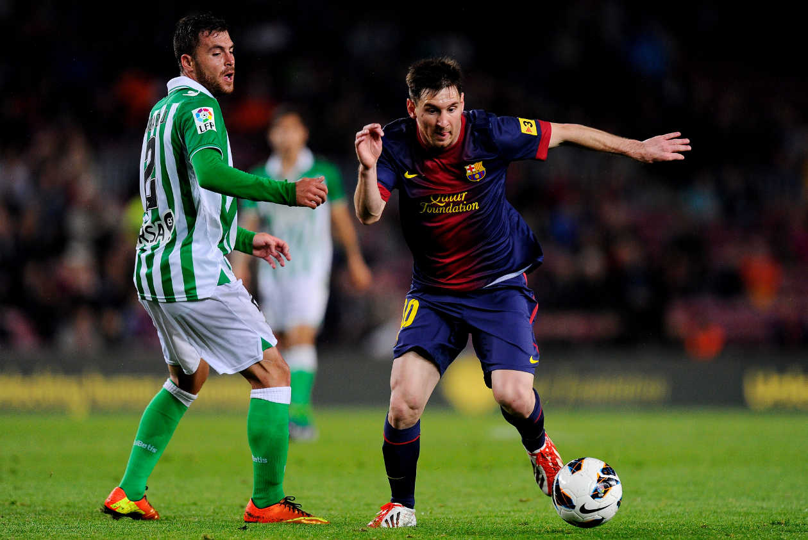
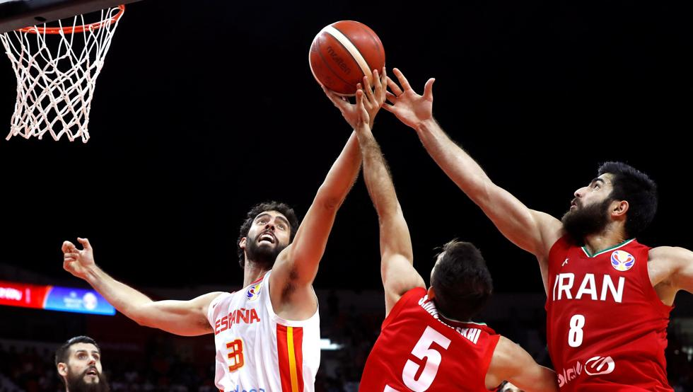
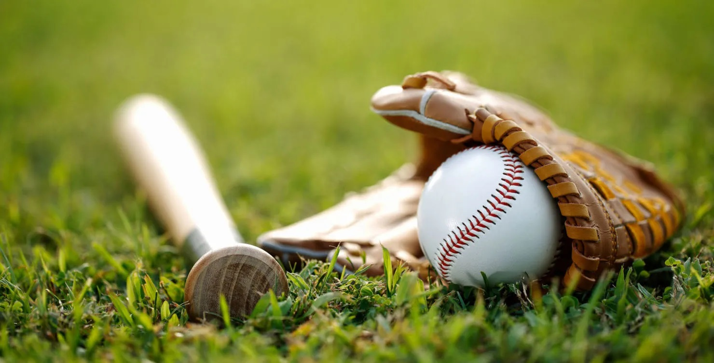
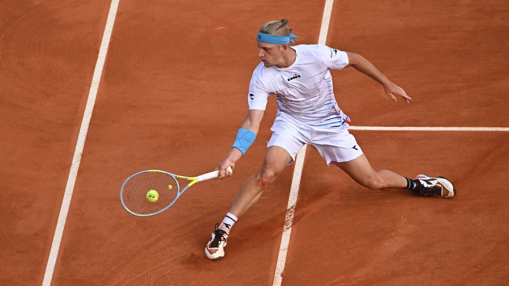

El Consejo Nacional de Deportes, bajo cuyo mando quedó la Federación Española de Fútbol,
impuso a
todas las federaciones nacionales una limpieza idiomática.
El fútbol o futbol (del inglés británico football, traducido como balompié) es un deporte de equipo
jugado entre dos conjuntos de once jugadores cada uno mientras que algunos árbitros que se ocupan de que las
normas se cumplan correctamente. Es ampliamente considerado el deporte más popular del mundo, pues lo
practican unas 270 millones de personas. También se le conoce como fútbol asociación o futbol asociación,
nombre derivado de The Football Association, primera federación oficial del mundo en este deporte y que
utilizó ese nombre para distinguirlo de otros deportes que incluyen la palabra "fútbol" o "futbol". En
algunos países de habla inglesa también se le conoce como soccer, abreviatura de association, puesto que el
nombre de football en esos países se asocia mayoritariamente a otros deportes con esa denominación
(principalmente en Estados Unidos, donde el nombre football aplica para el fútbol americano, un deporte
totalmente distinto).
El terreno de juego es rectangular de césped natural o artificial, con una portería o arco a cada lado del
campo. Se juega mediante una pelota que se debe desplazar a través del campo con cualquier parte del cuerpo
que no sean los brazos o las manos, y mayoritariamente con los pies (de ahí su nombre). El objetivo es
introducirla dentro de la portería o arco contrario, acción que se denomina marcar un gol. El equipo que
logre más goles al cabo del partido, de una duración de 90 minutos, es el que resulta ganador del encuentro.
El juego moderno fue reinventado en Inglaterra tras la formación de la Football Association, cuyas reglas de
1863 son la base del deporte en la actualidad. El organismo rector del fútbol es la Federación Internacional
de Fútbol Asociación, más conocida por su acrónimo FIFA. La competición internacional de fútbol más
prestigiosa es la Copa Mundial de Fútbol, organizada cada cuatro años por dicho organismo. Este evento es el
más famoso y el que cuenta con mayor cantidad de espectadores del mundo, doblando la audiencia de los Juegos
Olímpicos.
Baloncesto

El baloncesto nació como una solución a la necesidad de realizar alguna actividad deportiva
durante el invierno, en la escuela de la YMCA (Young Men's Christian Association) de Springfield,
Massachusetts. En 1891, James Naismith, profesor de educación física en la escuela, ideó el baloncesto
como actividad recreativa con una pelota basado en trece reglas. El juego se extendió por Estados Unidos,
Canadá y el resto del mundo
El baloncesto (del inglés basketball; de basket, 'canasta', y ball, 'pelota'), también conocido como
básquetbol, basquetbol o simplemente básquet,es un deporte de equipo, jugado entre dos conjuntos de
cinco jugadores cada uno durante cuatro períodos o cuartos de diez minutos cada uno ―doce minutos cada
cuarto en la NBA―. El objetivo del equipo es anotar puntos introduciendo un balón por la canasta, un aro a
3,05 metros sobre la superficie de la pista de juego del que cuelga una red. La puntuación por cada canasta
o cesta es de dos o tres puntos, dependiendo de la posición desde la que se efectúa el tiro a canasta, o de
uno, si se trata de un tiro libre por una falta de un jugador contrario. El equipo ganador es el que obtiene
el mayor número de puntos.
El contacto con la pelota se realiza con las manos. Los jugadores, también llamados baloncestistas, no
pueden trasladarse de un lado a otro sujetando la pelota, sino botándola contra el suelo. El equipo en
posesión del balón o atacante, intenta anotar puntos mediante tiros, entradas a canasta o mates, mientras
que el equipo defensor busca impedirlo robando la pelota o efectuando tapones. Cuando un tiro hacia la
canasta fracasa, los jugadores de ambos equipos intentan atrapar el rebote.
James Naismith, un profesor canadiense de educación física, inventó el baloncesto en 1891 en la YMCA de
Springfield, Massachusetts, Estados Unidos. El deporte ganó rápidamente popularidad y se expandió por las
universidades y colegios norteamericanos a principios del siglo XX.
La Federación Internacional de Baloncesto (FIBA) surgió en 1932 y el deporte debutó en los Juegos Olímpicos
de verano en 1936. En 1946 se fundó la principal liga profesional de los Estados Unidos, la National
Basketball Association (NBA), donde se formaron grandes jugadores que contribuyeron a la creciente
popularidad del baloncesto: Wilt Chamberlain y Bill Russell en los años 1960 y, posteriormente, Kareem
Abdul-Jabbar, Moses Malone, Larry Bird, Magic Johnson, Kobe Bryant, Michael Jordan y LeBron James, estos dos
últimos considerados por muchos como los dos mejores jugadores de la historia.
El baloncesto es uno de los deportes más practicados del mundo, con más de 450 millones de jugadores en
2013. Se juegan numerosas ligas y campeonatos en el mundo entero, sobre todo en Europa y más recientemente
en Asia, donde el deporte ha despuntado en el siglo XXI. Las mujeres representan una buena parte de los
practicantes, a pesar de una exposición menor en los medios del baloncesto femenino. Se han desarrollado
algunas variantes, como el baloncesto en silla de ruedas para deportistas discapacitados, el streetball y el
baloncesto 3x3. Existe una cultura específica surgida a partir del deporte que se expresa en la música, la
literatura, el cine y los videojuegos.
Beisbol

Cuando los españoles llegaron a Cuba (que por nombre le pusieron "Isla de Juana" por la hija de
los Reyes Católicos de España) el 24 de octubre de 1492 encontraron a los aborígenes cubanos practicando un
juego al que ellos llamaban batos, el cual se jugaba con una pelota hecha de resina de árbol que se golpeaba
con cualquier parte del cuerpo excepto las manos.
El béisbol(del inglés baseball; de base, y ball, 'pelota'), también llamado baseball o pelota base,2 es un
deporte de equipo jugado por dos equipos de nueve jugadores cada uno.
Es considerado uno de los deportes más populares en República Dominicana, Panamá, Corea del Sur, Cuba, Estados
Unidos, Curazao, Aruba, Japón, Nicaragua, Puerto Rico, Taiwán, México y Venezuela, y no tan popular, pero con
una cantidad importante de aficionados, en países como Canadá, Australia, Sudáfrica, Colombia, China, Países
Bajos e Italia. Los países considerados potencias de este deporte se encuentran ubicados en América (Norte y
el Caribe) y se juega en un gran campo cubierto completamente por césped natural o artificial, con excepción
de una zona llamada línea del corredor, donde los jugadores de la ofensiva corren para alcanzar las bases
ubicadas en los vértices del área cuadrangular llamada diamante, y anotar así como el área del lanzador, donde
el terreno es una loma de tierra.
El objetivo del juego es golpear una pelota con un bate (batear), desplazando la pelota a través del campo y
correr por el campo interno de tierra (infield) buscando alcanzar la mayor cantidad de bases posibles hasta
dar la vuelta a la base desde donde se bateó (home) para lograr anotar el tanto conocido como carrera. Los
jugadores defensivos, mientras tanto, buscan la pelota bateada para eliminar al jugador que bateó la pelota o
a otros corredores, antes que estos lleguen primero a alguna de las bases o consigan anotar la carrera (véase
Reglas para más detalles del juego).
El equipo que anote más carreras al cabo de los 9 episodios, llamados innings (o entradas) que dura el
encuentro, es el que resulta ganador. Si al término de las nueve entradas regulares persiste un marcador
igualado en carreras, el encuentro se extiende cuanto sea necesario para que haya un ganador, ya que según las
reglas básicas del juego no existe el empate, permitido solo en ligas amateurs e infantiles para limitar el
desgaste de los jugadores.
A diferencia de otros deportes que se juegan con pelota, tales como el fútbol, al que también se le conoce
como balompié, o el baloncesto conocido también como básquetbol; a pesar de que la palabra "béisbol" podría
traducirse al español, la costumbre de utilizar el término inglés se debe a la sensación de un nombre
fonéticamente extraño: la traducción tendría que ser pelota base o bola base, aunque en algunos países de
habla hispana se le acostumbra denominar de forma coloquial como el juego de pelota o sencillamente pelota.
[cita requerida]
Por otro lado, una de las características que diferencian al béisbol de otros deportes de conjunto, es que en
éste, la defensa es la que tiene la pelota, aparte de que las anotaciones las determinan los jugadores del
equipo a la ofensiva y no el equipo contrario.
Tenis

El primero en ganar 6 juegos con una diferencia mínima de 2 puntos gana 1 set, si igualan a 6 se
hace un tie-break para definir el set. Los partidos se ganan al mejor de 3 o de 5 sets (Grand Slam masculino).
El tenis, también llamado tenis de campo,es un deporte de raqueta practicado sobre una pista rectangular
(compuesta por distintas superficies, las cuales pueden ser cemento, tierra batida o hierba), delimitada por
líneas y dividida por una red.
Se disputa entre dos jugadores (individuales) o entre dos parejas (dobles). El objetivo del juego es lanzar una
pelota golpeándola con la raqueta de modo que rebote en el otro lado pasando la red dentro de los límites
permitidos del campo del rival, procurando que este no pueda devolverla para conseguir un segundo rebote en el
suelo y darle un punto.
Las primeras referencias del tenis tienen lugar en Alemania, nombrado «Palmenspiel» (‘juego de palmas’), dado
que al principio se golpeaba la pelota con la mano. Más tarde se empezaron a utilizar raquetas.
El tenis original se jugaba en pistas de hierba natural. Se originó en Europa a finales del siglo XVIII[cita
requerida] y se expandió en un principio por los países angloparlantes, especialmente entre sus clases altas.
Las líneas que limitan los extremos de la pista se denominan líneas de fondo y las líneas que limitan los
costados de la pista se denominan líneas laterales. A cada lado de la red y paralela a ella, se trazan dos
líneas entre las líneas laterales a una distancia de 6,40 m a partir de la red.
Estas líneas se llaman líneas de saque o de servicio. A cada lado de la red, el área entre la línea de servicio
y la red queda dividida por una línea central de servicio en dos partes iguales llamadas cuadros de servicio. La
línea central de servicio se traza paralelamente a las líneas laterales de individuales y equidistante a ellas.
Cada línea de fondo se divide en dos por una marca central de 10 cm de longitud, que se traza dentro de la pista
y es paralela a las líneas laterales de individuales. La línea central de servicio y la marca central son de 5
cm de anchura. Las otras líneas de la pista son de entre 2,5 y 5 cm de anchura, excepto las líneas de fondo que
pueden ser de hasta 10 cm de anchura. Todas las medidas de la pista se toman por la parte exterior de las
líneas. Todas las líneas de la pista tienen que ser del mismo color para que contrasten claramente con el color
de la superficie.
El tenis puede ser practicado en distintas superficies; ya conocemos la primera en que se comenzó a jugar el
tenis, hierba natural. Existen también otras que con el paso del tiempo se han ido popularizando, como son las
pistas duras, tierra batida, tenis quick... Estas últimas son elegidas para la apertura de clubes, ya que son
las más económicas. Actualmente no figura ninguna competición profesional que se realiza en dicha superficie.
Las pistas de tenis que tienen un mayor coste económico en su mantenido son las de tierra batida, seguida de
hierba natural.